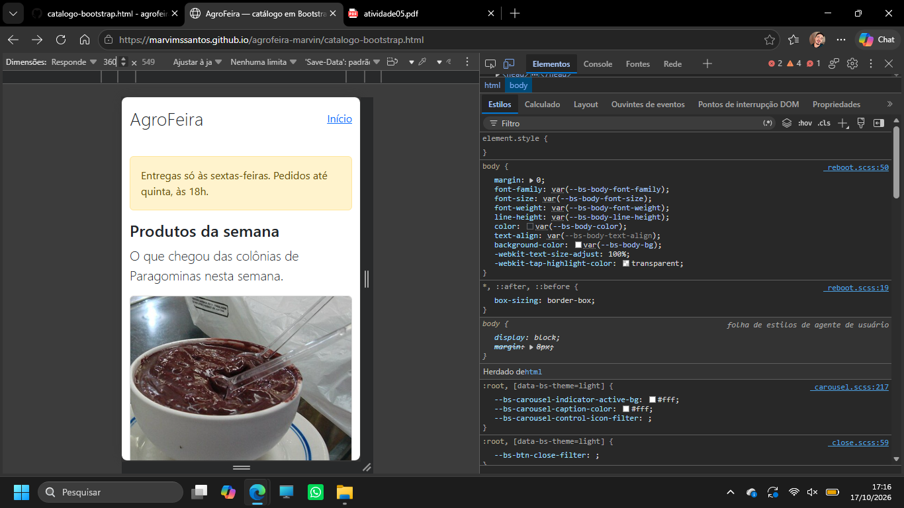
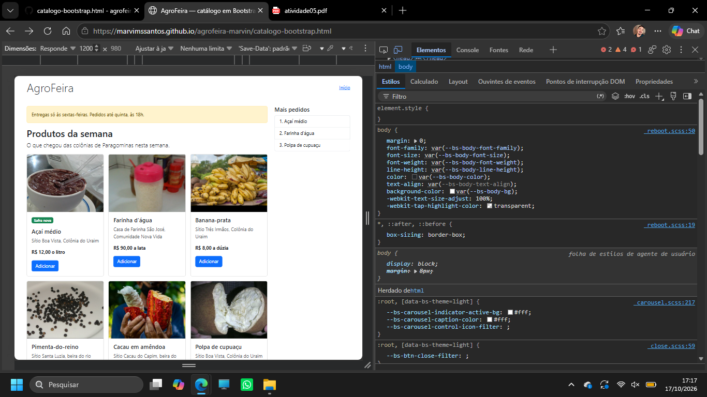
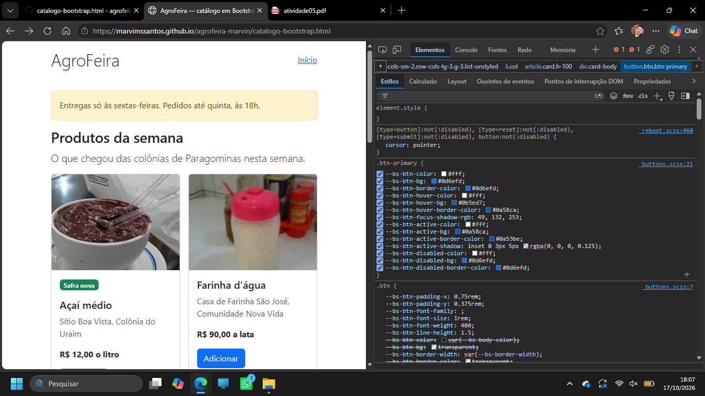
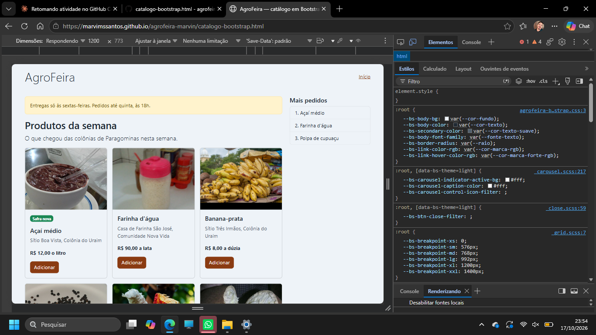
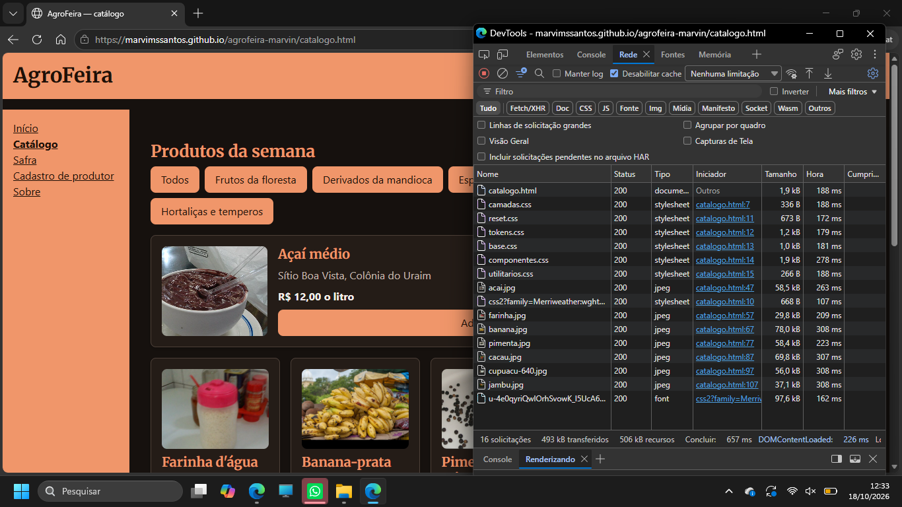
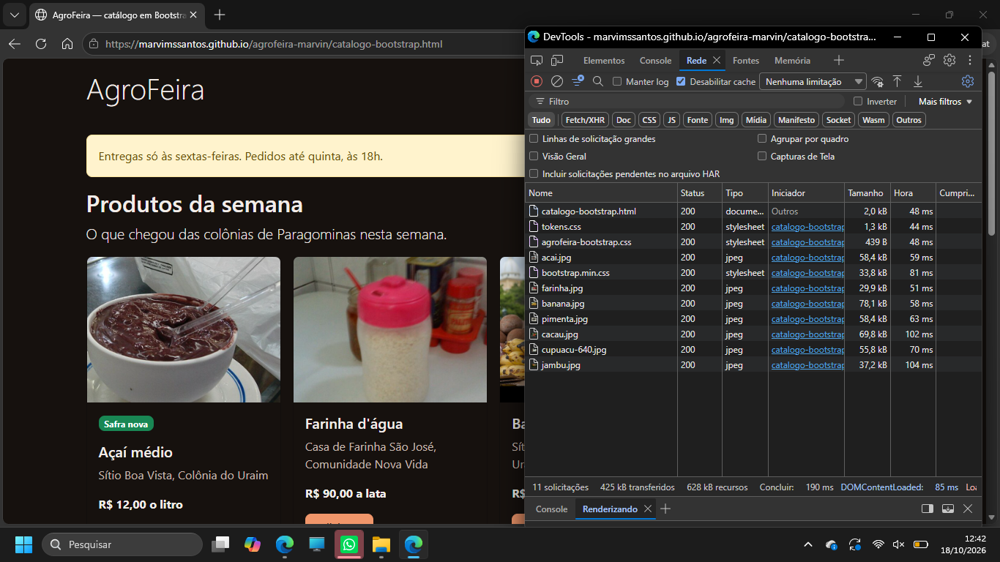
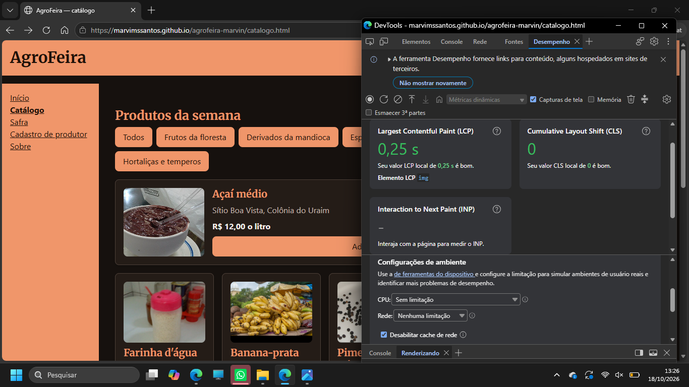
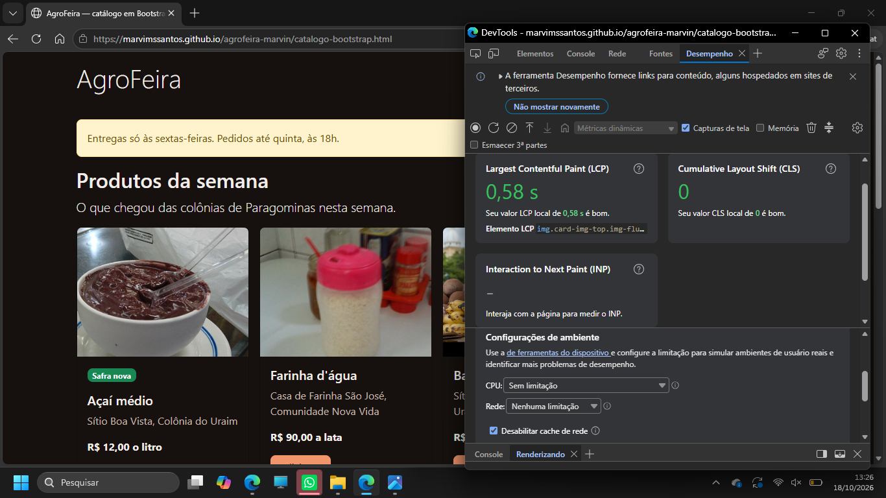

Comparativo: o catálogo autoral e o catálogo em Bootstrap
Aluno: Marcos Vinicius Morais dos Santos. Matrícula: 2022008617.
Repositório: https://github.com/marvimssantos/agrofeira-marvin
Endereços do site:
- Site: https://marvimssantos.github.io/agrofeira-marvin/
- Catálogo autoral: https://marvimssantos.github.io/agrofeira-marvin/catalogo.html
- Catálogo em Bootstrap: https://marvimssantos.github.io/agrofeira-marvin/catalogo-bootstrap.html
O catálogo em três larguras
Em 360 px, o catálogo em Bootstrap tem 1 coluna de cartões, a lista "Mais pedidos" não aparece e o teste da rolagem deu false.
Em 768 px, tem 2 colunas de cartões, a lista "Mais pedidos" não aparece e o teste da rolagem deu false.
Em 1200 px, tem 3 colunas de cartões (o sétimo sozinho na terceira fileira), a lista "Mais pedidos" aparece à direita e o teste da rolagem deu false.


1. A customização
| Variável alterada | Valor (token e valor dele) | Por quê |
|---|---|---|
| --bs-body-bg | --cor-fundo (#EEF3F8) | pinta o fundo da página e, junto, o dos cartões e da lista "Mais pedidos", que leem essa variável: o branco de fábrica (#fff) vira o azul-acinzentado do projeto. |
| --bs-body-color | --cor-texto (#1F2933) | troca o cinza-escuro de fábrica (#212529) pelo texto do projeto, em toda a página. |
| --bs-secondary-color | --cor-texto-suave (#52606D) | muda a cor do produtor e do rodapé, que usam text-body-secondary. |
| --bs-body-font-family | --fonte-texto (system-ui, sans-serif) | quase nada muda na tela: a pilha de letras de fábrica do Bootstrap já começa em system-ui. |
| --bs-border-radius | --raio (8px) | arredonda mais os cantos do cartão, do alerta e do botão: de .375rem (6 px) para 8 px. |
| --bs-link-color-rgb | --cor-marca-rgb (138, 59, 18) | o link "Início" deixa o azul de fábrica, rgb(13, 110, 253), e passa à cor da marca. O link lê a cor em três números, por isso o token existe também nessa notação, com vírgulas. |
| --bs-link-hover-color-rgb | --cor-marca-forte-rgb (107, 45, 14) | com o ponteiro em cima, o link escurece para a marca forte (o de fábrica era rgb(10, 88, 202)). |
| --bs-btn-bg, --bs-btn-border-color, --bs-btn-color | --cor-marca (#8A3B12) e --cor-sobre-marca (#FFFFFF) | o botão "Adicionar" deixa o azul #0d6efd e passa à cor da marca, com texto branco. |
| --bs-btn-hover-color, -hover-bg, -hover-border-color | --cor-marca-forte (#6B2D0E) e --cor-sobre-marca (#FFFFFF) | com o ponteiro em cima, o botão escurece (o de fábrica era o azul #0b5ed7). |
| --bs-btn-active-color, -active-bg, -active-border-color | --cor-marca-forte (#6B2D0E) e --cor-sobre-marca (#FFFFFF) | no botão pressionado, a mesma marca forte (o de fábrica era o azul #0a58ca). |
Trocar só a --bs-primary no :root não muda o botão porque o fundo do botão não lê essa variável. No painel Estilos (Captura 3), a regra .btn-primary, do arquivo _buttons.scss, define o fundo com --bs-btn-bg, e o valor dela está escrito fixo, #0d6efd, em vez de apontar para a --bs-primary. Eu troquei a --bs-primary para red no F12 e o botão continuou azul: ele lê a --bs-btn-bg.

.btn-primary no painel Estilos, com o --bs-btn-bg.O antes e o depois (Capturas 2 e 4) mudam quatro coisas:
- Fundo e texto: de branco (#fff) e cinza-escuro (#212529) para
--cor-fundo(#EEF3F8) e--cor-texto(#1F2933). - Botão Adicionar: de azul (#0d6efd, e #0b5ed7 com o ponteiro em cima) para
--cor-marca(#8A3B12) e--cor-marca-forte(#6B2D0E). - Link "Início": de azul (rgb(13, 110, 253), e rgb(10, 88, 202) com o ponteiro em cima) para a cor da marca e a marca forte.
- Cantos: de .375rem (6 px) para 8 px (
--raio).

2. As medições
Medi no Microsoft Edge, nos endereços públicos das duas páginas, com o F12 aberto, Disable cache (aba Rede) e Disable network cache (aba Desempenho) marcadas, o modo dispositivo desligado e a mesma janela nas duas, cuja área da página deu [1358, 636] no Console.
| Critério | Autoral | Bootstrap |
|---|---|---|
| CSS transferido | 6,0 kB (da folha do Google Fonts: 0,7 kB) | 35,6 kB (bootstrap.min.css 33,8 kB + tokens.css 1,3 kB + agrofeira-bootstrap.css 0,4 kB) |
| Fontes | 97,6 kB | 0,0 kB |
| Imagens | 388 kB | 388 kB |
| Documento | 1,9 kB | 2,0 kB |
| Total transferido | 493 kB (sem a linha favicon.ico) | 425 kB (sem a linha favicon.ico) |
| LCP (valor do meio) | 0,30 s (cinco cargas: 0,26 s, 0,50 s, 0,34 s, 0,30 s, 0,25 s) | 0,51 s (cinco cargas: 0,26 s, 0,58 s, 0,26 s, 0,51 s, 0,58 s) |
| Linhas de CSS próprio | 474 linhas (1 + 44 + 67 + 109 + 252 + 1) | 90 linhas (67 + 23) |
| Classes no cartão do açaí | 4 classes em 3 elementos | 14 classes em 8 elementos (com o selo: 16 classes em 9 elementos) |

catalogo.html.
catalogo-bootstrap.html.
catalogo.html, na 5ª das cinco cargas (0,25 s).
catalogo-bootstrap.html, na 5ª das cinco cargas (0,58 s).3. A leitura dos números
Os bytes. O catálogo em Bootstrap baixou mais CSS: 35,6 kB contra 6,0 kB do autoral, 5,9 vezes mais; sem a folha do Google Fonts (0,7 kB), o autoral baixou 5,4 kB e a diferença sobe para 6,6 vezes. Mesmo assim o total transferido do Bootstrap é menor, 425 kB contra 493 kB, porque o total não responde à pergunta do CSS: as fotos pesam o mesmo nas duas páginas (388 kB) e dominam o total, e a fonte entra só no autoral, 97,6 kB do arquivo .woff2 mais a folha do Google Fonts, enquanto o Bootstrap desta atividade não carrega fonte (0,0 kB). Os 68 kB a mais do autoral vêm quase todos da fonte.
O LCP. O valor do meio foi 0,30 s no autoral e 0,51 s no Bootstrap. Entre as cinco cargas, o autoral variou 0,25 s (de 0,25 s a 0,50 s) e o Bootstrap, 0,32 s (de 0,26 s a 0,58 s). A diferença entre os dois valores do meio, 0,21 s, é menor que as duas variações, e o menor valor das duas páginas é o mesmo, 0,26 s. Por isso o número permite dizer que, neste computador e sem limitação de rede, as duas páginas pintam a foto do açaí em torno de 0,3 a 0,5 s, mas não permite afirmar qual das duas é mais rápida: uma nova rodada poderia inverter a ordem. Além do Bootstrap, as duas páginas diferem em outras coisas: só o catalogo.html baixa a folha e a fonte do Google Fonts, e o conteúdo é diferente (o Bootstrap tem o aviso, a frase de abertura e o selo). O LCP mede a página inteira, e não o framework.
As linhas e as classes. O autoral tem 474 linhas de CSS próprio e o Bootstrap, 90: quem escreveu mais CSS foi o autoral, cerca de 5,3 vezes mais. Já o cartão do Bootstrap pôs mais classes no HTML: 14 classes em 8 elementos contra 4 classes em 3 elementos do catalogo.html (sem contar o selo). No autoral, mudar uma decisão que vale para todos os cartões, como o espaço interno, é editar a regra .cartao-produto do componentes.css; no Bootstrap, as classes estão repetidas nos sete li, e a mudança vai ou para o HTML de cada cartão ou para uma variável no agrofeira-bootstrap.css. O total do autoral inclui os seis arquivos, que servem as cinco páginas do site, e o do Bootstrap serve uma só: por isso o componentes.css traz regras que o catalogo.html não usa, como as do cadastro (.formulario-cadastro) e as da tabela de safra (.tabela-safra).
O que a medição não mostra. Primeiro, os bytes foram medidos com o cache desligado, a primeira visita; um visitante que volta ao site, com o cache ligado, baixa bem menos, e a medição não mostra isso (10.3). Segundo, o LCP foi medido num só computador, com a rede e a CPU sem limitação, e variou até 0,32 s entre as cargas; não mostra como as páginas se comportam num celular ou numa rede lenta (10.6). Não usei a contagem de requisições como argumento: são 16 no autoral e 11 no Bootstrap, mas sete de cada são as mesmas fotos, e uma única requisição, a da fonte, pesa 97,6 kB, então o número de requisições não diz quanto foi baixado (10.5).
Controle e trabalho. O catalogo.html tem coisas que o catalogo-bootstrap.html não tem: o link de pular (Atividade 4, Passo 9; 14 linhas no componentes.css, e exigiu saber posicionar o link fora da tela e trazê-lo no foco), o menu (Atividade 3, Passo 6; 10 linhas, mais 4 do menu do catálogo), a barra de categorias (Atividade 4, Passo 5; 8 linhas de Flexbox), a container query do cartão (Atividade 4, Passo 6; 22 linhas) e o :has() do foco (Atividade 4, Passo 8; 4 linhas). Cada uma pediu que eu escrevesse, testasse e medisse a regra, e isso mostra controle: no autoral eu decido cada regra e a unidade dela, como o ponto de quebra de 46rem, enquanto o Bootstrap fixa os pontos de quebra em px (por exemplo, --bs-breakpoint-lg: 992px, que o painel Estilos mostra). Mostra trabalho também: para pôr as minhas cores no Bootstrap precisei saber que o botão lê --bs-btn-bg e não a --bs-primary, e que o link lê a cor em três números, e não em hexadecimal (Parte B). A diferença vale nos dois sentidos: o catalogo-bootstrap.html tem o aviso de entrega, a frase de abertura e o selo "Safra nova", que o catalogo.html não tem. Digo só o que os dois arquivos mostram, e não o que o framework "não tem".
4. Conclusão
Usaria o Bootstrap em um protótipo de uma página com prazo curto, porque o catalogo-bootstrap.html ficou pronto com 90 linhas de CSS próprio contra 474 do autoral; não usaria na AgroFeira de cinco páginas com peças próprias, porque o Bootstrap baixou 35,6 kB de CSS contra 6,0 kB do autoral e não trouxe o link de pular, o :has() nem a container query, que no autoral custaram 14, 4 e 22 linhas.